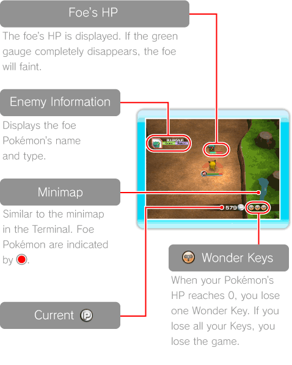
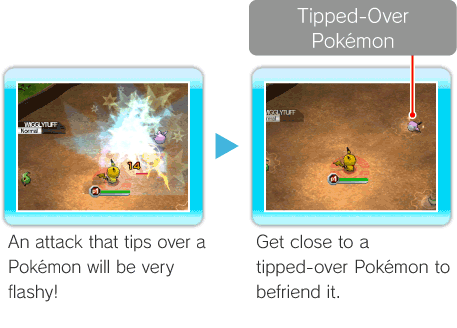
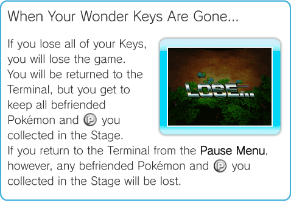
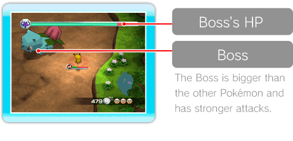
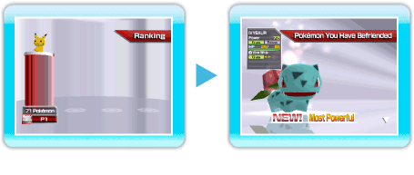

13 |
Stages |
 |
|
Stage Screen Display On the Stage screen, you’ll see the mini map, Current 
Advancing through a Stage Defeat foe Pokémon and advance through each Stage. Each Stage is made up of several areas. At the end of each area, you’ll find a Launch Pad that takes you to the next area. A Boss waits for you at the end of the last area. Defeat the Boss to clear the Stage. Once you have moved ahead to the next area, you cannot return to the previous one. If you select TO THE TERMINAL from the Pause Menu (see p. 16: Pause Menu), you will lose all Pokémon you’ve befriended and
Tip Over Pokémon to Befriend Them When you defeat a Pokémon, you’ll sometimes tip them over. If you touch a Pokémon that has been tipped over and is lying on the ground, you will befriend it. At any time, you can switch your Pokémon with any of the other Pokémon in your collection by using the Switch Menu (see p. 11: Switch Menu). However, during Co-op Play (see p. 18: Facilities for Co-op Play), befriended Pokémon may only be used by the player who befriended them until the end of the Stage. If you make a Pokémon wobbly with a critical hit (see p. 15: Critical Hits) and attack again, there is a better chance of tipping the Pokémon over. Note: Pokémon that are tipped over will disappear after a certain amount of time. 
Switching Pokémon To switch the Pokémon you are controlling, press
HP and Wonder Keys You start with three Pokémon that have an HP of 0 cannot be used again until you return to the Terminal. During Co-op Play, each player’s HP is individual to the Pokémon he or she controls, but Keys are shared amongst all players. Caution: If you do not have any more befriended Pokémon available, and your HP reaches 0, then the game is over, regardless of how many Keys you have left.
 Boss Battles In the final area of each Stage, a Boss waits to test your skills. Defeat the Boss by depleting its HP (green gauge), and the Launch Pad will appear. Jump on the Launch Pad to clear the Stage. Once in a while, when you defeat a Boss, you might be lucky enough to get the chance to befriend it.  Stage Clear Screen Once you’ve cleared the Stage, the number of Pokémon each player defeated will be displayed. After that, you can confirm Pokémon you’ve befriended in the Stage. If MOST POWERFUL appears on the clear screen, this Pokémon now has the highest Power of all Pokémon you’ve befriended. If NEW! appears, this Pokémon is the first of its type that you’ve befriended.  |
 to open the Switch Menu and select the Pokémon you would like to switch from the Pokémon list. If you switch Pokémon before your HP has reached 0, you can continue the game without losing a Key. While you have the Switch Menu open, the game continues, so you might get hit by an attack while trying to switch Pokémon. Be careful—if you are hit by an attack while trying to switch Pokémon, the switch will be cancelled.
to open the Switch Menu and select the Pokémon you would like to switch from the Pokémon list. If you switch Pokémon before your HP has reached 0, you can continue the game without losing a Key. While you have the Switch Menu open, the game continues, so you might get hit by an attack while trying to switch Pokémon. Be careful—if you are hit by an attack while trying to switch Pokémon, the switch will be cancelled.
 |
 |
 |